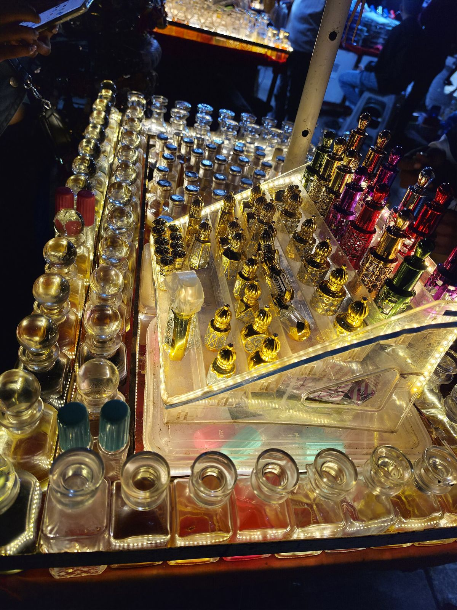
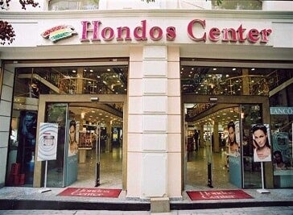
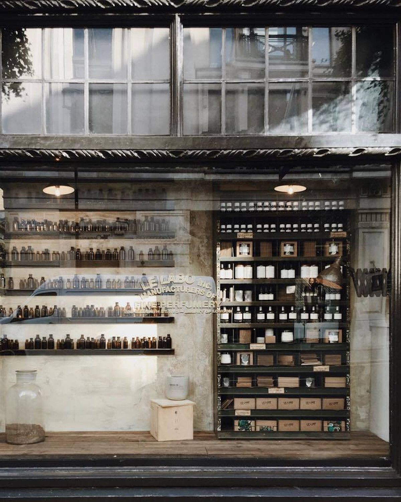

Hondos Center op Kos is een Grieks warenhuis van een bekende keten. Het is vooral een winkel voor beauty, cosmetica, parfum en verzorging, en er is ook kleding en accessoires. De meeste mensen komen voor parfum.
Je vindt er make-up van bekende merken, zoals Dior en MAC, en een ruim aanbod dames- en herenparfum, ook van duurdere merken. Daarnaast crèmes, serums en dagelijkse huidverzorging, en producten voor je haar.

Parfumflesjes in een winkel. De foto is een voorbeeld en is niet op Kos gemaakt.
Foto: Dev Jadiya, Wikimedia Commons, CC BY-SA 4.0
Het voelt meer als een compact warenhuis dan als alleen een cosmeticawinkel. In het centrum van Kos-stad is het een van de grotere winkels op het eiland voor cosmetica, parfum en beauty.

Een winkel van de keten Hondos Center. Deze foto is niet van de vestiging op Kos.

De winkel is meestal ’s ochtends open, en op maandag, dinsdag, donderdag en vrijdag ook ’s avonds. Woensdag en zaterdag meestal alleen de ochtend. Zondag is de winkel dicht.
Bezoekers geven de winkel ongeveer 4,3 van 5, uit zo’n 379 beoordelingen.
Adres
Eleftheriou Venizelou 17, Kos-stad